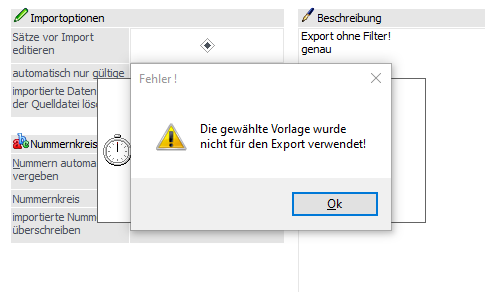
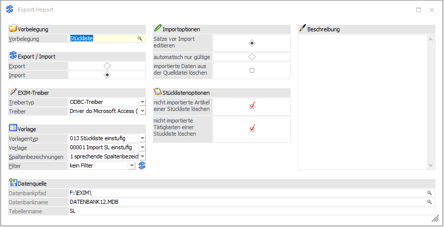

Meldung beim Import: "Die gewählte Vorlage wurde nicht für den Export verwendet."
Im Zuge eines Imports wurde eine Vorbelegung selektiert und der Import mit den definierten Optionen durchgeführt.

Erklärung
Zwischen der verwendeten Vorlage für das Erzeugen der Exportdatei und der Vorlage für den (Re-)Import wurde eine Differenz festgestellt. Sobald sich innerhalb der Vorlagendefinition in der Vorlagen Anlage der Export/Import-Vorlage die enthaltenen Felder in Art, Menge und Reihenfolge wieder gleichen, ist der Import wie gewohnt durchführbar.
Meldung beim Import mit Text-Treibern: "Textdatei kann nicht geöffnet werden"
Es wurde ein funktionaler Import mit Texttreibern eingerichtet. Nun soll die Vorlage für den Import um Zusätzliche Felder erweitert werden, die auch entsprechend in der zu übernehmenden Textdatei hinterlegt werden. Trotzdem meldet der Import den Fehler "Textdatei kann nicht geöffnet werden".
Erklärung
Beim Import von Textdateien wird im Programmverzeichnis die Datei SCHEMA.INI angelegt, welche die Dateibeschreibung der Importdatei enthält. Wenn sich die Vorlage und die Importdatei selbst ändert, hat das aber keine Auswirkung auf die SCHEMA.INI. Damit der Import wieder wie gewohnt durchgeführt werden kann, muss die SCHEMA.INI entsprechend angepasst, oder gelöscht (und damit beim nächsten Import neu angelegt) werden.
Import von Anlagegütern - Berechnung der kumulierten AfA und Jahres-AfA
Wenn beim Import von Anlagegütern der Anfangsbuchwert (Pflichtfeld) mit importiert wird, dann wird die kumulierte AfA aus der Differenz von Anschaffungswert und Anfangsbuchwert gerechnet. Werden Anlagegüter importiert, die eine Jahres-AfA von 0,00 hinterlegt haben, wird der Jahres-AfA-Betrag im Zuge des Imports automatisch neu berechnet.
Import von einstufigen Stücklisten (Vorlagentyp 13)
Grundsätzlich bleiben im Stücklisten-Stamm bereits enthaltene Artikel und Tätigkeiten auch nach einem neuen Stücklisten-Import vorhanden. Dies gilt auch dann, wenn diese Artikel bzw. Tätigkeiten in der Stückliste der Importdatei nicht enthalten sind.
Mit Hilfe der zwei Stücklistenoptionen…
ü nicht importierte Artikel einer Stückliste löschen
ü nicht importierte Tätigkeiten einer Stückliste löschen
… können beim Import diese Artikel und / oder Tätigkeiten im Stücklisten-Stamm gelöscht werden, wenn sie nicht mehr Bestandteil der zu importierenden Stücklistendatei sind.

Hinweis zum Importieren von Kontakten via XML (WebService)
Das Inaktiv-Kennzeichen im Kontaktestamm ist ein Datumsfeld. Datumsfelder können via XML ganz normal importiert werden, wodurch dann ein Kontakt auf "Inaktiv" gesetzt wird. Bei einem XML-Import können aber keine leeren Datumsfelder importiert werden, d.h. via XML kann kein Kontakt von Inaktiv auf Aktiv gesetzt werden. Um das doch zu ermöglichen, kann das Datum mit dem Wert "31.12.2999" (im jeweils gültigen Datumsformat) beschickt werden, dann erkennt das Programm, dass in dem Fall beim Kontakt das Inaktiv-Kennzeichen deaktiviert werden soll.